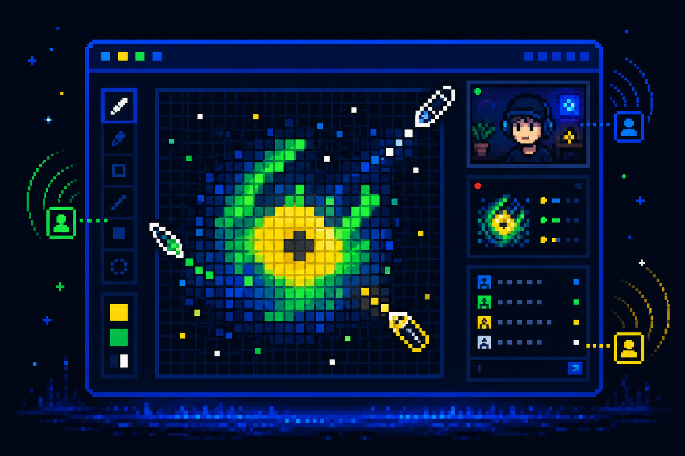

01
BROADCAST
Share only what matters.
Choose a browser tab, application window, full screen, or draw a selected capture area. The viewer gets a readable stream without hiding BasePaint's tools.
LIVE CREATOR ROOMS / ON BASE
BasePaint Live adds screen share, selected-area capture, camera, audio, and artist layers directly to basepaint.xyz.
01 / THE IDEA
Keep the shared canvas at the center while opening a window into each artist's process.
BROADCAST
Choose a browser tab, application window, full screen, or draw a selected capture area. The viewer gets a readable stream without hiding BasePaint's tools.
CONTEXT
Dim the shared canvas and isolate an artist's onchain pixels. Toggle them beneath the live stream whenever you need context.
TRUST
A short-lived wallet signature opens the transmitter room. The server verifies that wallet owns a BasePaint Brush before it can publish.

LIVE SIGNAL / BASE02 / TWO SIDES, ONE CANVAS
Keep a small movable preview, minimize it, or pop it into a separate window for a second monitor.
Open the artist accordion, view camera and media, and move the live window anywhere over the canvas.
03 / LIVE ROOMS
Verified broadcasts will appear here.
Live artists appear first in the extension, even before they save their first pixel of the day.
04 / INSTALL THE PROTOTYPE
This hackathon build is installed as an unpacked Chrome or Edge extension. No wallet key is stored by BasePaint Live.
Get the latest source from GitHub and keep the folder somewhere permanent.
Open chrome://extensions, enable Developer mode, choose Load unpacked, and select the repository root.
Visit BasePaint's Paint page and choose the new Streaming tab beside Chat and Mentions.
BUILT IN PUBLIC FOR THE BASEPAINT HACKATHON